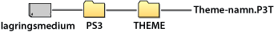

Inställningar > Temainställningar
Temainställningar
Justera inställningarna för att anpassa XMB™ för objekt som t ex bakgrunden eller teckensnittet för skärmtext.
Tema
Du kan justera inställningarna för att anpassa designen av t.ex. ikoner och bakgrunden som visas på XMB™-skärmen. Temat kan ändras med någon av följande metoder.
Välja ett förinstallerat tema
Välj ett tema som är förinstallerat i PS3™-systemet.
Ladda ner ett tema på PS3™-systemet
När du laddar ner ett tema från  (PlayStation®Store) eller genom att använda
(PlayStation®Store) eller genom att använda  (webbläsare), kommer det att installeras automatiskt på PS3™-systemet när nerladdningen har slutförts.
(webbläsare), kommer det att installeras automatiskt på PS3™-systemet när nerladdningen har slutförts.
Installera ett tema med en spelskiva eller kommersiellt tillgänglig videoprogramvara på Blu-ray Disc (BD-ROM)
För att installera och använda en temafil som finns på skivmedia, välj ikonen  under
under  (Spel), och välj därefter den temafil som du vill installera. Temat kommer automatiskt att användas som systemtema när installationen är klar.
(Spel), och välj därefter den temafil som du vill installera. Temat kommer automatiskt att användas som systemtema när installationen är klar.
Skapa eller ladda ner ett tema på en PC
När du laddar ner ett tema från en webbsida eller skapar ett tema med en PC, gör en ny mapp med namnet [PS3] - [THEME] på lagringsmediet och spara sedan temat i den här mappen. Temafilerna ska sparas med filändelsen [.P3T].

För att installera temat på PS3™-systemets hårddisk, anslut lagringsmediet som innehåller temafilen till systemet, och välj sedan  (Inställningar) >
(Inställningar) >  (Temainställningar) > [Tema] > [Installera].
(Temainställningar) > [Tema] > [Installera].
Tips!
- En ikon som inte är en del av temafilen kommer att bytas ut mot en annan ikon i temafilen eller förbli standard XMB™-skärmikon.
- Om en temafil innehåller flera bakgrunder, kommer bakgrundstemat att ändras automatiskt.
- PC-mjukvara finns tillgängligt och gör det möjligt för dig att skapa dina egna temafiler för PS3™-systemet. (Kommersiell tillgänglig programvara för att skapa grafiska komponenter behövs också.) För mer information, besök SCE-webbplatsen för din region.
- En USB-adapter (medföljer ej) krävs för att använda lagringsmedia med vissa modeller i PS3™-systemet.
Radera tema
Välj det tema som du vill radera, tryck på  -knappen och välj sedan [Delete].
-knappen och välj sedan [Delete].
Färg
Ställ in bakgrundsfärg för XM™-skärmen.
| Ursprunglig | Ställ in till den ursprungliga bakgrundsfärgen. |
|---|---|
| (färgprov) | Ställ in den valda färgen som bakgrundsfärg. |
Bakgrund
Ställ in XMB™-skärmens bakgrund med bakgrunden som används i temat eller i bilden vald som skrivbordsunderlägg under  (Foto).
(Foto).
| Ljusstyrka | Ändra bakgrundens ljusstyrka. |
|---|---|
| Ursprunglig | Ställ in till det ursprungliga temat. |
| Classic | Ställ in på temat [Classic]. |
| (namn på tema) | Ställ in att använda bakgrunden för det tema som ställdes in under [Tema]. |
| skrivbordsunderlägg | Ställ in bilden som valdes ut som skrivbordsunderlägg under (Foto) som bakgrund. |
Font
Välj vilket teckensnitt (font) som ska användas i XMB™ eller meddelanden under  (Vänner). När systemspråket är inställt på Korean, tecken i simplified Chinese eller traditional Chinese, kan denna inställning inte väljas.
(Vänner). När systemspråket är inställt på Korean, tecken i simplified Chinese eller traditional Chinese, kan denna inställning inte väljas.
Tips!
Vilka teckensnitt som kan väljas beror på vilket språk som används.